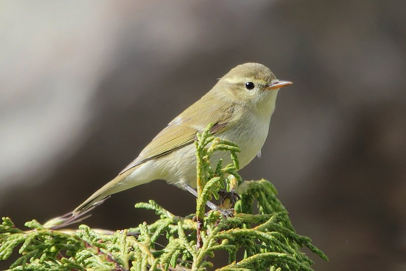

Птичье разнообразие может потрясти кого угодно. Среди них можно встретить и могучих 150-килограммовых гигантов, таких как африканский страус, и настоящих малюток, вес которых составляет считанные граммы. К сожалению, о самых маленьких представителях птичьего царства известно очень мало. Именно этот пробел и заполнит эта статья.
Десятое место: Рогатый колибри
Длина этой птички составляет всего около 12 сантиметров. Несмотря на свою миниатюрность, этот рогатый колибри очень красив. Подобно другим представителям своего семейства эта птица имеет привлекающую внимание яркую окраску и оперение, выкрашенное в медно-зеленый цвет. Передняя часть шеи и горло имеют бархатисто-черный цвет очень глубокого оттенка. При этом брюшко птички – белое. Обитает в Бразилии, в провинции Минас-Жейрас, предпочитая степной ландшафт.
Девятое место: Корольковый вьюрок
Длина тела этой птицы почти не отличается от обладателя предыдущей строчки рейтинга самых маленьких птиц в мире и составляет 11-12 сантиметров. Встретить ее можно только в высокогорье Индии, Ирана, Пакистана, Турции и Кавказа. Но, поскольку в неволе корольковый вьюрок размножается довольно неплохо, его можно повстречать и на территории других стран.
Восьмое место: Банановый певун
Длина этой птички составляет около 11 сантиметров. При этом она имеет очень выразительную внешность: небольшой, загнутый вниз клювик, черную шапочку, ярко-желтые брюшко и грудь, и серую спинку. Так же как и колибри, банановый певун ест мелких насекомых, сок ягод и нектар, но в отличие от него не может зависать в воздухе на одном месте. Чтобы добыча нектара шла более успешно у птицы есть раздвоенный длинный язык, на котором еще имеются специальные пластины.
Интересно то, что хотя у большинства других птиц самец значительно ярче самки, у бананового певуна каких-либо различий не наблюдается. Живет банановый певун в южной и центральной Америке, предпочитая влажную лесистую местность. Кроме этого его можно встретить в садах.
Седьмое место: Веерохвостая цистикола
Совершенно невзрачная с виду обладательница седьмой строчки и длины в 10 сантиметров. Это пернатое можно встретить почти повсюду. Предпочтение отдает умеренно сухим ландшафтам рядом с водоемами поросшими растительностью. Встречается и на сельскохозяйственных угодьях. Особенно любит веерохвостая цистикола рисовые поля
Шестое место: Зеленая пеночка

Еще один десятисантиметровый малыш. При такой длине, вес этой пеночки составляет всего около восьми граммов. Ее внешний вид свершено непритязательный: брюшко грязно-белого цвета и окрашенная в оливково-зеленый цвет спинка. Обитает она в южной тайге, высокогорных хвойных лесах и в зоне смешанных лесов Центральной Европы. Образ жизни у птицы очень скрытный: как правило, она прячется в верхней части древесных крон. Питается в основном моллюсками, пауками и другими мелкими насекомыми.
Пятое место: Крапивник

Длина тела крапивника колеблется в районе 9-10 сантиметров. С виду ее можно принять за комок перьев, из которого вверх задорно торчит хвостик. Встречается в Северной Африке, Северной Америке и Евразии. Отдает предпочтение вересковым пустошам, зарослям около водоемов, оврагам и сырым лиственным, хвойным и смешанным лесам. Интересно, что летать крапивник не очень-то любит, предпочитая держаться по возможности ближе к земле, где он очень резво продирается сквозь заросли.
Несмотря на совершенно обычную внешность, голос у крапивника очень красивый и сильный. По мнению ценителей певчих птиц, пение крапивника можно сравнить с соловьиным.
Четвертое место: Корольки
Размер королька настолько мал, что его нередко именуют «северным колибри». Максимальная длина их тел составляет 9 сантиметров, а вес 5-7 граммов. Предпочитают хвойные леса, в высоких кронах которых и обитают. Надо сказать, что несмотря на малый размер, эти птички очень стойкие и уверенно выдерживают суровый климат. Питаются личинками и яйцами насекомых, а также семенами.
Внешне все корольки имеют одну черту, которая отличает их от других птиц – это яркие хохолки на макушках. При этом они еще умеют их прижимать. Отличаются очень высокой активностью, постоянно порхая с одой ветви на другую и даже иногда повисая на тонких ветвях вниз головой. Имеют хороший голос, который подают когда сильно взволнованы, а также когда наступает брачный период.
Третье место: Охристый колибри
Это пернатое уже значительно меньше предыдущих. При длине тела около восьми сантиметров оно весит всего три-четыре грамма. Интересно, что это единственный вид колибри, который водится на пространствах России. Как и у большинства других птиц, самцы окрашены значительно ярче: бронзово-зеленая шапка на голове, белый зоб и охристо-рыжее оперение. А вот самки выглядят скромнее: охристые бока, белый низ и зеленоватое поверху оперение.
Кроме России охристая колибри встречается в Северной Америке, откуда на зиму перелетает в Мексику. В России она тоже обитает не повсеместно. Известно, что ее наблюдали на острове Рахманова. Также сообщалось о залетах охристого колибри на Чукотку, однако документальных подтверждений таким сообщениям нет.
Второе место: Короткоклювка
Длина тела этой птички составляет не более восьми сантиметров, а вес тела – не более шести граммов. Благодаря таким скромным размерам короткоклювка считается самой маленькой птичкой Австралии. Обитает в лесистых местах. Легче всего ее встретить в эвкалиптовых зарослях.
Первое место: Колибри-пчелка
Самая маленькая птичка в мире. Ее длина не превышает шести сантиметров. Еще больше удивляет ее вес – до двух граммов. Это примерно вес половины чайной ложки воды. Живет колибри-пчелка исключительно на Кубе, отдавая предпочтение лесистым, богатым лианами районам. Рацион состоит только из нектара цветов. Гнезда строят такого же крохотного размера, как и они сами – около двух сантиметров в диаметре. В качестве строительного материала используются кусочки коры, лишайника и паутина. В каждой кладке обычно имеется два яйца, размер которых под стать птице – примерно как горошина.
Скорость обмена веществ колибри невероятно высока. Чтобы поддержать свой уровень энергии колибри-пчелки собирают нектар примерно с полутора тысяч цветков в день. Их пульс в спокойном состоянии составляет 300 уд/мин. В ночное время они впадают в некое подобие анабиоза: если днем температура их тел составляет 43 градуса по Цельсию, то ночью она составляет около 20-ти градусов. К утру температура вновь поднимается и птица снова готова неутомимо собирать нектар.
К своим малышам колибри-матери относятся очень заботливо. Чтобы птенцы не ослабли и не погибли, она подносит им пищу каждые 8-10 мнут. Несмотря на такой напряженный график, который матери нужно делить с заботой о самой себе, почти все птенцы колибри-пчелки выживают.
Зебра
Зебра !!! НЕ ПТИЧКА, про нее расказывать мы не будем!